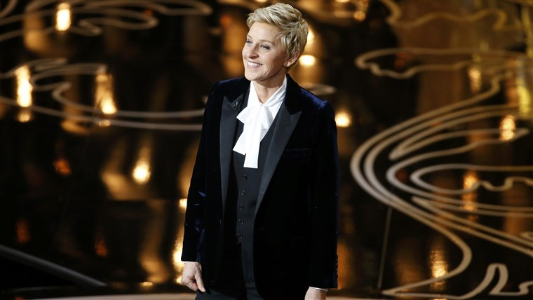

Ellen's work in the late 1980s and early 1990s included the film Coneheads. DeGeneres starred in a series of films for a show named Ellen's Energy Adventure, which is part of the Universe of Energy attraction and pavilion at Walt Disney World's Epcot. The film also featured Bill Nye, Alex Trebek, Michael Richards, and Jamie Lee Curtis. The show revolved around DeGeneres' falling asleep and finding herself in an energy-themed version of Jeopardy!, playing against an old rival, portrayed by Curtis, and Albert Einstein. The next film had DeGeneres co-hosting an educational look at energy with Nye. The ride first opened on September 15, 1996, as Ellen's Energy Crisis, but was quickly given the more positive-sounding name Ellen's Energy Adventure.
TV CAREER
DeGeneres' first regular TV role was in a short-lived Fox sitcom called Open House. She played the role of Margo Van Meter, an office worker at the Juan Verde Real Estate company. The show co-starred Alison LaPlaca and Mary Page Keller. In 1992, producers Neal Marlens and Carol Black cast DeGeneres in their sitcom Laurie Hill, in the role of Nurse Nancy MacIntyre. The series was canceled after only four episodes, but Marlens and Black were so impressed with DeGeneres' performance that they soon cast her in their next ABC pilot, These Friends of Mine, which they co-created with David S. Rosenthal.
At the Governor's Ball after the 46th Annual Emmy Awards telecast, September 1994
DeGeneres' comedy career became the basis of the successful sitcom Ellen, named These Friends of Mine during its first season. The ABC show was popular in its first few seasons due in part to DeGeneres' style of observational humor; it was often referred to as a "female Seinfeld."
Ellen reached its height of popularity in April 1997, when DeGeneres came out as a lesbian on The Oprah Winfrey Show. Her character on the sitcom also came out of the closet to her therapist, played by Oprah Winfrey. The coming-out episode, titled "The Puppy Episode", was one of the highest-rated episodes of the show. The series returned for a fifth season but experienced falling ratings due to ABC's cutting back on promoting the show. It was believed that The Walt Disney Company, ABC's parent owner, had become uncomfortable with the subject matter depicted on the show now that DeGeneres' character was openly gay. In May 1998, Ellen was canceled. DeGeneres returned to stand-up comedy and later re-established herself as a successful talk show host.
DeGeneres returned to television in 2001 with a new CBS sitcom, The Ellen Show. DeGeneres launched a daytime television talk show, The Ellen DeGeneres Show, in September 2003. One of several celebrity-hosted talk shows surfacing at the beginning of that season, including those of Sharon Osbourne and Rita Rudner, her show has consistently risen in the Nielsen ratings and received widespread critical praise. It was nominated for 11 Daytime Emmy Awards in its first season, winning four, including Best Talk Show. The show has won 25 Emmy Awards for its first three seasons on the air. DeGeneres is known for her dancing and singing with the audience at the beginning of the show and during commercial breaks. She often gives away free prizes and trips to be in her show's studio audience with the help of her sponsors.
The show broadcast for a week from Universal Studios Orlando in March 2007. Skits included DeGeneres going on the Hulk Roller Coaster Ride and the Jaws Boat Ride. In May 2007, DeGeneres was placed on bed rest due to a torn ligament in her back. She continued hosting her show from a hospital bed, tended to by a nurse, explaining "the show must go on, as they say." Guests sat in hospital beds as well. On May 1, 2009, DeGeneres celebrated her 1000th episode, featuring celebrity guests such as Oprah Winfrey, Justin Timberlake, and Paris Hilton, among others.
On September 9, 2009, it was confirmed that DeGeneres would replace Paula Abdul as a judge of the ninth season of American Idol. Her role started after the contestant auditions, at the beginning of "Hollywood Week". It is reported that DeGeneres also signed a contract to be a judge on the show for at least five seasons. She made her American Idol debut on February 9, 2010. However, on July 29, 2010, DeGeneres and Fox executives announced that the comedian would be leaving American Idol after one season. In a statement, DeGeneres said that the series "didn't feel like the right fit for me".
Starting in the 2017-2018 television season DeGeneres began hosting the game show Ellen's Game of Games on NBC which is based, and expands on games played on her talk show. The series had a preview episode on December 18, 2017 with regular episodes beginning the following January.
AWARD SHOWS

DeGeneres received wide exposure on November 4, 2001, when she hosted the televised broadcast of the Emmy Awards. Presented after two cancellations due to network concerns that a lavish ceremony following the September 11 attacks would appear insensitive, the show required a more somber tone that would also allow viewers to temporarily forget the tragedy. DeGeneres received several standing ovations for her performance that evening, which included the line: "What would bug the Taliban more than seeing a gay woman in a suit surrounded by Jews?"
In August 2005, DeGeneres hosted the 2005 Primetime Emmy Awards ceremony held on September 18, 2005. This was three weeks after Hurricane Katrina, making it the second time she hosted the Emmys following a national tragedy. She also hosted the Grammy Awards in 1996 and in 1997.
On September 7, 2006, DeGeneres was selected to host the 79th Academy Awards ceremony, which took place on February 25, 2007. This makes her the first openly gay person to have hosted the event. During the Awards show, DeGeneres said, "What a wonderful night, such diversity in the room, in a year when there's been so many negative things said about people's race, religion, and sexual orientation. And I want to put this out there: If there weren't blacks, Jews and gays, there would be no Oscars, or anyone named Oscar, when you think about that." Reviews of her hosting gig were positive, with one saying, "DeGeneres rocked, as she never forgot that she wasn't just there to entertain the Oscar nominees but also to tickle the audience at home." Regis Philbin said in an interview that "the only complaint was there's not enough Ellen."
DeGeneres was nominated for an Emmy Award as host of the Academy Awards broadcast. On August 2, 2013, it was announced that DeGeneres would host the Academy Awards on March 2, 2014, for the second time.
A selfie orchestrated by 86th Academy Awards host Ellen DeGeneres during the broadcast is the second-most retweeted tweet ever.DeGeneres said she wanted to homage Meryl Streep's record 17 Oscar nominations by setting a new record with her, and invited other Oscar celebrities to join them. The resulting photo of twelve celebrities broke the previous retweet record within forty minutes and was retweeted over 1.8 million times in the first hour. By the end of the ceremony it had been retweeted over 2 million times, less than 24 hours later, it had been retweeted over 2.8 million times. As of May 2017, it has been retweeted over 3.4 million times. The group selfie effort was parodied by Lego and Matt Groening with The Simpsons. It beat the previous record, which was held by Barack Obama, following his victory in the 2012 presidential election.